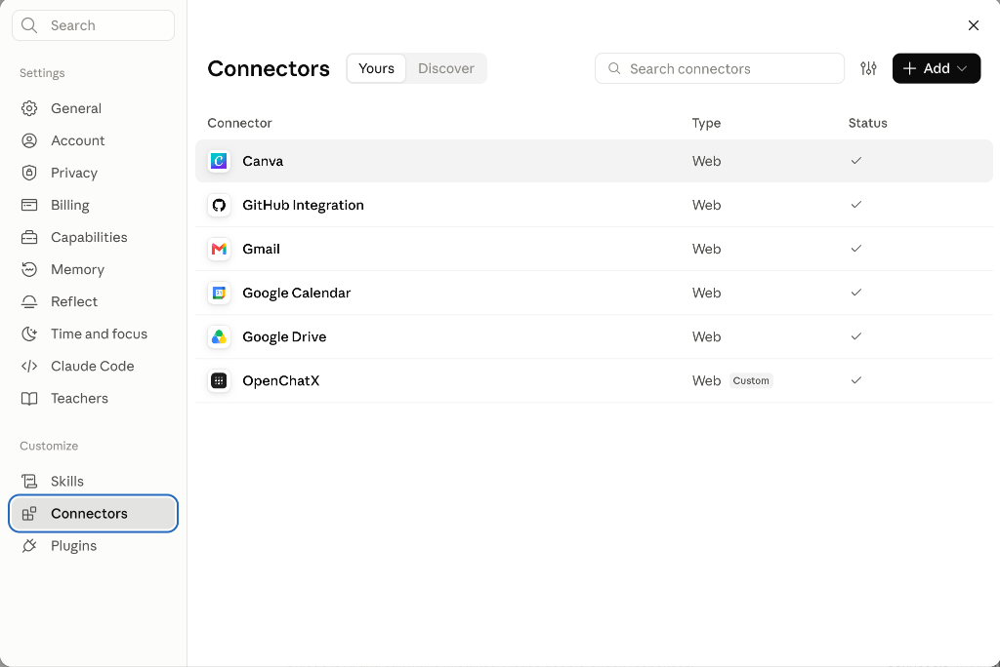

無需修改 OpenChatX App 本體。透過標準 OAuth 2.1 Remote MCP 規範，將 Claude 網頁版、桌面版或手機 App 與本機 OpenChatX Core Runtime 完美對接，解鎖 26 項本機工具。

為追求本機自主性的 Claude 使用者量身打造的高效橋接器
完全無需改動官方 OpenChatX.app 二進位檔或重新打包 DMG。直接搭配原生 OpenChatX 執行，升級無痛。
ChatGPT 與 Claude 可同時連入同一套 OpenChatX Runtime，共享本機記憶、自訂 Skills 與工作區狀態。
原生支援 RFC 7591 動態客戶端註冊 (DCR)、PKCE S256 授權碼防偽與 Fernet AES-256 加密保存。
包含檔案讀寫、局部代碼編輯、終端 Shell 命令執行、長進程監控、專案 Goals 管理與子代理運作。
內建 launchd 服務腳本，開機在背景靜默守護，不佔用終端視窗，掛載隨開隨用。
一鍵使用 Tailscale Funnel 固定免費域名或 Cloudflare Quick Tunnel，無需公網固定 IP 或手動設定路由器。
僅需幾行指令即可完成配置並開始與 Claude 對話
確認官方 OpenChatX.app 已經啟動，預設會在 127.0.0.1:8001 提供 MCP 接口。
git clone https://github.com/iancheng64-cmd/openchatx-claude-gateway.git
cd openchatx-claude-gateway
bash scripts/setup.sh
腳本會自動建立 venv、生成資料庫金鑰、設定預設憑證 (openchatx / openchatx) 並綁定穿透。
OpenChatX，URL 填你的穿透網址加上 /mcp（例：https://your-domain.ts.net/mcp）。連線成功後，Claude 可根據任務意圖自動調度以下工具
| 分類 | 工具名稱 (Tool ID) | 功能說明 |
|---|---|---|
| 檔案操作 | openchatx_file_read | 讀取本機檔案內容（支援文字與代碼） |
| 檔案操作 | openchatx_file_write | 新增檔案或完整覆寫檔案內容 |
| 檔案操作 | openchatx_file_edit | 外科手術式精確局部修改代碼或設定檔 |
| 檔案操作 | openchatx_apply_patch | 套用跨多檔案的 unified diff 補丁 |
| 檔案搜尋 | openchatx_glob | 根據萬用字元 pattern 搜尋檔名與目錄結構 |
| 檔案搜尋 | openchatx_grep | 全專案正則表達式快速搜尋文字內容 |
| 檔案搜尋 | openchatx_image_view | 檢視本機圖片或系統截圖資源 |
| 終端執行 | openchatx_bash | 在本地終端機中安全執行 Shell 指令 |
| 終端執行 | openchatx_bash_process | 監控、互動與管理長時間執行的後台進程 |
| 終端執行 | openchatx_terminal | 互動式虛擬終端與 REPL 連線控制 |
| 技能擴充 | openchatx_skill_search | 搜尋 OpenChatX 內建與自訂 Skills |
| 技能擴充 | openchatx_skill_manage | 新增、編輯或維護 Skill 工作流 |
| 技能擴充 | openchatx_capability_list | 檢視目前已啟用的能力與擴充模組 |
| 工作區 | openchatx_project_manage | 設定與切換當前作用中的專案根目錄 |
| 工作區 | openchatx_goal_list | 檢視當前工作區尚未完成的 Goals 目標 |
| 工作區 | openchatx_goal_manage | 新增、更新或標記任務目標達成狀態 |
| 工作區 | openchatx_rule_resolve | 解析與載入適用於當前任務的行為約束 Rules |
| 工作區 | openchatx_rule_manage | 管理工作區自訂約束規則 |
| 進階調度 | openchatx_subagent_list | 列出可調用的專屬子代理模型清單 |
| 進階調度 | openchatx_subagent_run | 啟動獨立子代理執行特定分支任務 |
| 進階調度 | openchatx_summarize | 提取會話核心脈絡，進行跨對話記憶交接 |
| 進階調度 | openchatx_tool_search | 動態檢索並懶載入本機與擴充工具庫 |
| 進階調度 | openchatx_tool_call | 呼叫動態掛載的內部工具 |
| 進階調度 | openchatx_fetch_url | 抓取外部網頁內容並轉為乾淨 Markdown |
| 進階調度 | openchatx_start_here | 每次新對話開始時自動對齊環境上下文 |
| 系統診斷 | gateway_status | 查詢閘道即時運作狀態與健康度指標 |